CMU 15-112: Fundamentals of Programming and Computer Science
Class Notes: Graphics in Tkinter
Note: We will only run graphics in Standard Python. These examples will not run in Brython.
- Create an Empty Canvas
- Draw a Rectangle
- Draw Multiple Rectangles
- Draw Centered Rectangles
- Draw Custom Colors
- Draw Other Shapes and Text
- Tuples and List-of-Tuples as Parameters
- Graphics Helper Functions
- Drawing Circular Patterns with Trigonometry
- Example: Clocks!
- Create an Empty Canvas
from tkinter import * def draw(canvas, width, height): pass # replace with your drawing code! def runDrawing(width=300, height=300): root = Tk() canvas = Canvas(root, width=width, height=height) canvas.pack() draw(canvas, width, height) root.mainloop() print("bye!") runDrawing(400, 200)Result:
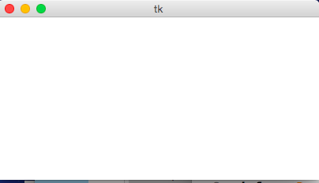
- Draw a Rectangle
def draw(canvas, width, height): canvas.create_rectangle(0,0,150,150, fill="yellow")Result:
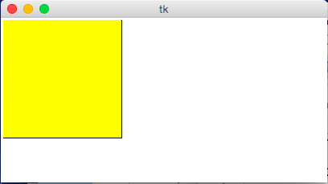
- Draw Multiple Rectangles
def draw(canvas, width, height): canvas.create_rectangle( 0, 0, 150, 150, fill="yellow") canvas.create_rectangle(100, 50, 250, 100, fill="orange", width=5) canvas.create_rectangle( 50, 100, 150, 200, fill="green", outline="red", width=3) canvas.create_rectangle(125, 25, 175, 190, fill="purple", width=0)Result:
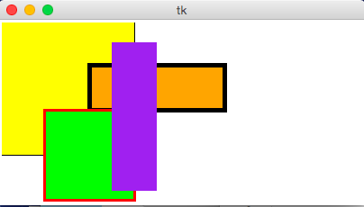
- Draw Centered Rectangles
def draw(canvas, width, height): margin = 10 # Approach #1: Add margin to top/left, subtract margin from bottom/right: canvas.create_rectangle(margin, margin, width-margin, height-margin, fill="darkGreen") # Approach #2: add/subtract width/height from center (cx, cy) (cx, cy) = (width/2, height/2) (rectWidth, rectHeight) = (width/4, height/4) canvas.create_rectangle(cx - rectWidth/2, cy - rectHeight/2, cx + rectWidth/2, cy + rectHeight/2, fill="orange")Result:
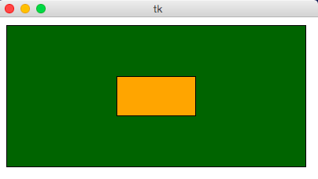
- Draw Custom Colors
def rgbString(red, green, blue): return "#%02x%02x%02x" % (red, green, blue) def draw(canvas, width, height): pistachio = rgbString(147, 197, 114) maroon = rgbString(176, 48, 96) canvas.create_rectangle(0, 0, width/2, height/2, fill=pistachio) canvas.create_rectangle(width/2, height/2, width, height, fill=maroon)Result:
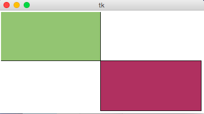
- Draw Other Shapes and Text
def draw(canvas, width, height): canvas.create_oval(100, 50, 300, 150, fill="yellow") canvas.create_polygon(100,30,200,50,300,30,200,10, fill="green") canvas.create_line(100, 50, 300, 150, fill="red", width=5) canvas.create_text(200, 100, text="Amazing!", fill="purple", font="Helvetica 26 bold underline") canvas.create_text(200, 100, text="Carpe Diem!", anchor=SW, fill="darkBlue", font="Times 28 bold italic")Result:
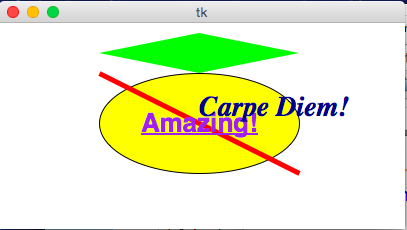
- Tuples and List-of-Tuples as Parameters
def draw(canvas, width, height): canvas.create_oval((50, 50), (250, 150), fill="yellow") canvas.create_polygon([(50,30),(150,50),(250,30),(150,10)], fill="green")Result:
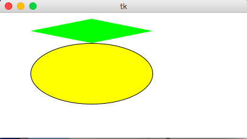
- Graphics Helper Functions
def drawBelgianFlag(canvas, x0, y0, x1, y1): # draw a Belgian flag in the area bounded by (x0,y0) in # the top-left and (x1,y1) in the bottom-right width = (x1 - x0) canvas.create_rectangle(x0, y0, x0+width/3, y1, fill="black", width=0) canvas.create_rectangle(x0+width/3, y0, x0+width*2/3, y1, fill="yellow", width=0) canvas.create_rectangle(x0+width*2/3, y0, x1, y1, fill="red", width=0) def draw(canvas, width, height): # Draw a large Belgian flag drawBelgianFlag(canvas, 25, 25, 175, 150) # And draw a smaller one below it drawBelgianFlag(canvas, 75, 160, 125, 200) # Now let's have some fun and draw a whole grid of Belgian flags! flagWidth = 30 flagHeight = 25 margin = 5 for row in range(4): for col in range(6): left = 200 + col * flagWidth + margin top = 50 + row * flagHeight + margin right = left + flagWidth - margin bottom = top + flagHeight - margin drawBelgianFlag(canvas, left, top, right, bottom)Result:
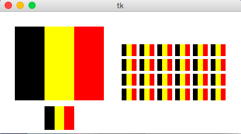
- Drawing Circular Patterns with Trigonometry
Trig 101
- Circle centered at origin
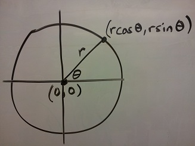 - Circle centered at (cx, cy)
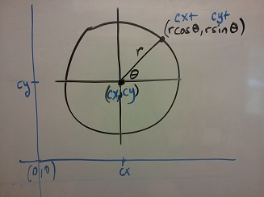 - Circle centered at (cx, cy) in Python graphics ("up is down!")
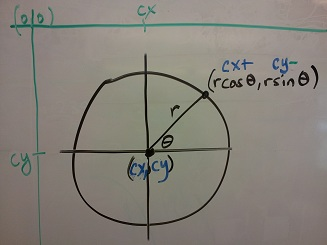
Example:import math def draw(canvas, width, height): (cx, cy, r) = (width/2, height/2, min(width, height)/3) canvas.create_oval(cx-r, cy-r, cx+r, cy+r, fill="yellow") r *= 0.85 # make smaller so time labels lie inside clock face for hour in range(12): hourAngle = math.pi/2 - (2*math.pi)*(hour/12) hourX = cx + r * math.cos(hourAngle) hourY = cy - r * math.sin(hourAngle) label = str(hour if (hour > 0) else 12) canvas.create_text(hourX, hourY, text=label, font="Arial 16 bold")Result:
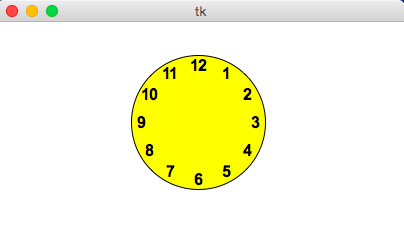
- Circle centered at origin
- Example: Clocks!
import math def drawClock(canvas, x0, y0, x1, y1, hour, minute): # draw a clock in the area bounded by (x0,y0) in # the top-left and (x1,y1) in the bottom-right # with the given time # draw an outline rectangle canvas.create_rectangle(x0, y0, x1, y1, outline="black", width=1) # find relevant values for positioning clock width = (x1 - x0) height = (y1 - y0) r = min(width, height)/2 cx = (x0 + x1)/2 cy = (y0 + y1)/2 # draw the clock face canvas.create_oval(cx-r, cy-r, cx+r, cy+r, outline="black", width=2) # adjust the hour to take the minutes into account hour += minute/60.0 # find the hourAngle and draw the hour hand # but we must adjust because 0 is vertical and # it proceeds clockwise, not counter-clockwise! hourAngle = math.pi/2 - 2*math.pi*hour/12 hourRadius = r*1/2 hourX = cx + hourRadius * math.cos(hourAngle) hourY = cy - hourRadius * math.sin(hourAngle) canvas.create_line(cx, cy, hourX, hourY, fill="black", width=1) # repeat with the minuteAngle for the minuteHand minuteAngle = math.pi/2 - 2*math.pi*minute/60 minuteRadius = r*9/10 minuteX = cx + minuteRadius * math.cos(minuteAngle) minuteY = cy - minuteRadius * math.sin(minuteAngle) canvas.create_line(cx, cy, minuteX, minuteY, fill="black", width=1) def draw(canvas, width, height): # Draw a large clock showing 2:30 drawClock(canvas, 25, 25, 175, 150, 2, 30) # And draw a smaller one below it showing 7:45 drawClock(canvas, 75, 160, 125, 200, 7, 45) # Now let's have some fun and draw a whole grid of clocks! width = 40 height = 40 margin = 5 hour = 0 for row in range(3): for col in range(4): left = 200 + col * width + margin top = 50 + row * height + margin right = left + width - margin bottom = top + height - margin hour += 1 drawClock(canvas, left, top, right, bottom, hour, 0)Result:
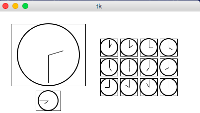